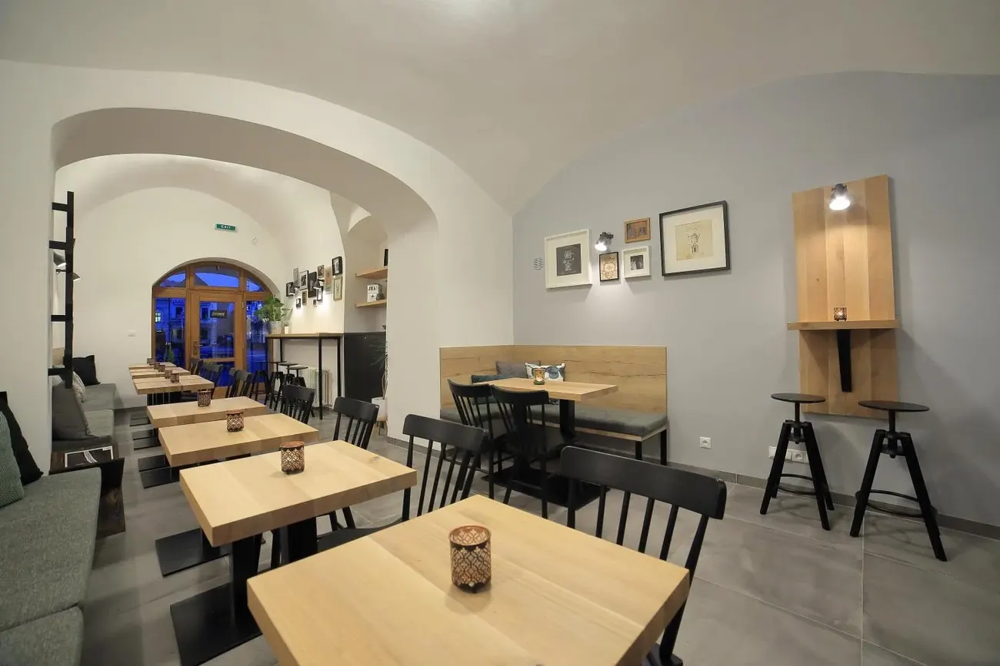
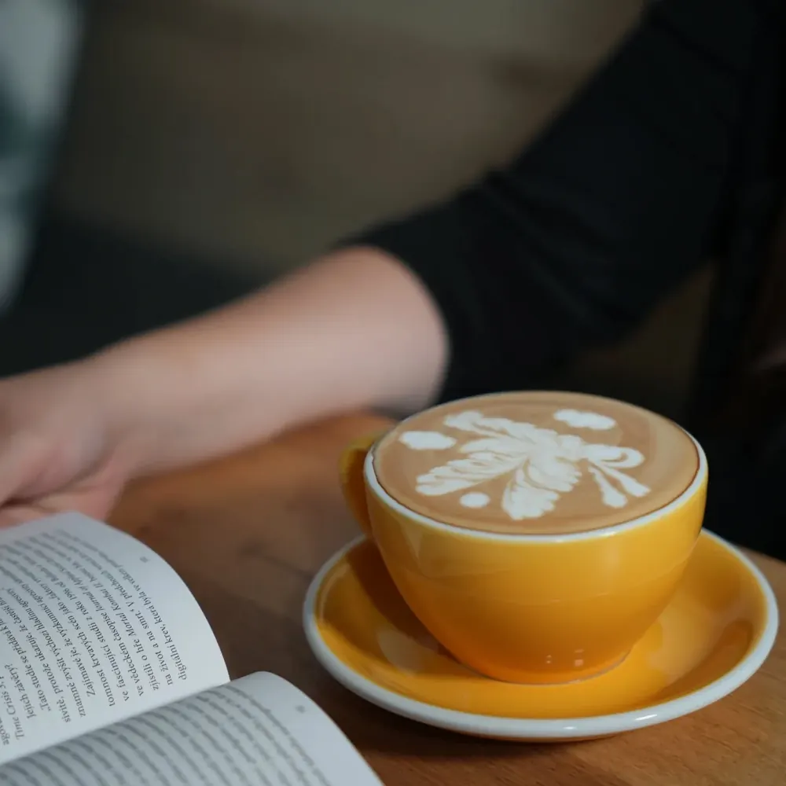
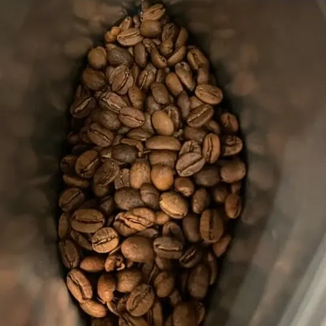
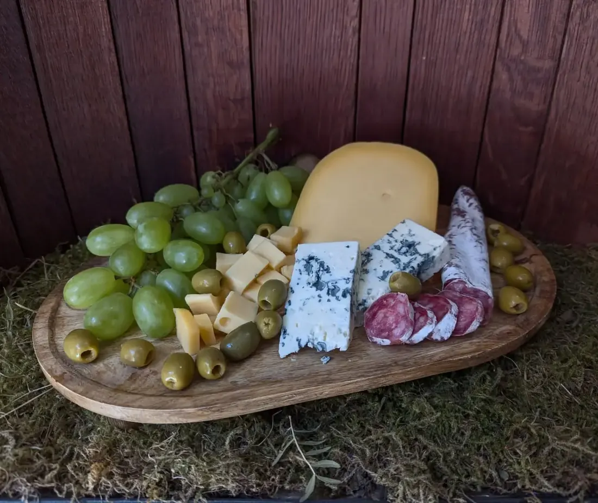
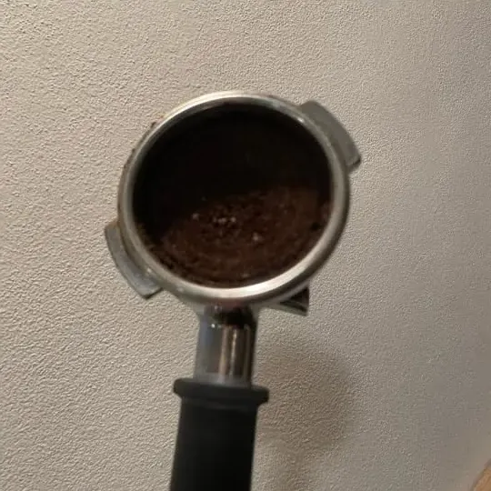

Hárok č. 1 · Mariánske námestie 24 · Žilina
Káva a dizajn v centre Žiliny
„Pripravili sme si pre Vás koncept výbornej kávy a jedinečného dizajnu v priamom centre Žiliny“— Miho cafe na Facebooku
- 4,9 z 5 · 81 hodnotení na Google
- 100 % odporúča · 19 recenzií na Facebooku
- Mariánske nám. 24/157 · 010 01 Žilina
-

1 · priestor ↓ zväčšiť
-

2 · káva ↓ zväčšiť
-

3 · zrnká
-

4 · syrová misa, Winefest
Polovica konceptu · káva
Výborná káva
Tak to o sebe píšu sami: „koncept výbornej kávy“. Kaviareň nájdete priamo na Mariánskom námestí 24 a novinky sledujte na Instagrame @mihocafe.

Nápojový lístok
Ukážka návrhu: sem príde aktuálny nápojový lístok Miho cafe s cenami — doplníme ho podľa lístka v kaviarni.
Rám 1 · orezať tu · priestor
Jedinečný dizajn
Druhá polovica ich konceptu: „jedinečného dizajnu v priamom centre Žiliny“.
Mariánske námestie 24/157, Žilina. Fotka interiéru je z Facebooku kaviarne.
Rám 4 · Facebook, 8. 8. 2026
Syrová misa na Winefest
Ako každý rok aj na dnešný Winefest sme si pre vás pripravili syrovú misu plnú dobrôt
4,9z 5 na Google · 81 hodnotení
100 %odporúča na Facebooku · 19 recenzií
Kde nás nájdete
- Adresa
- Mariánske námestie 24/157
010 01 Žilina
Otvoriť v Mapách Google - Telefón
- 0902 622 645
- mihocafeza@gmail.com
- @mihocafe
- facebook.com/mihocafe
Hodiny
| Pondelok | 10:00–21:00 |
|---|---|
| Utorok | 10:00–21:00 |
| Streda | 10:00–21:00 |
| Štvrtok | 10:00–21:00 |
| Piatok | 10:00–01:00 |
| Sobota | 14:30–01:00 |
| Nedeľa | neuvedené |
Overiť: hodiny podľa OpenStreetMap — pred návštevou si ich radšej potvrďte telefonicky.